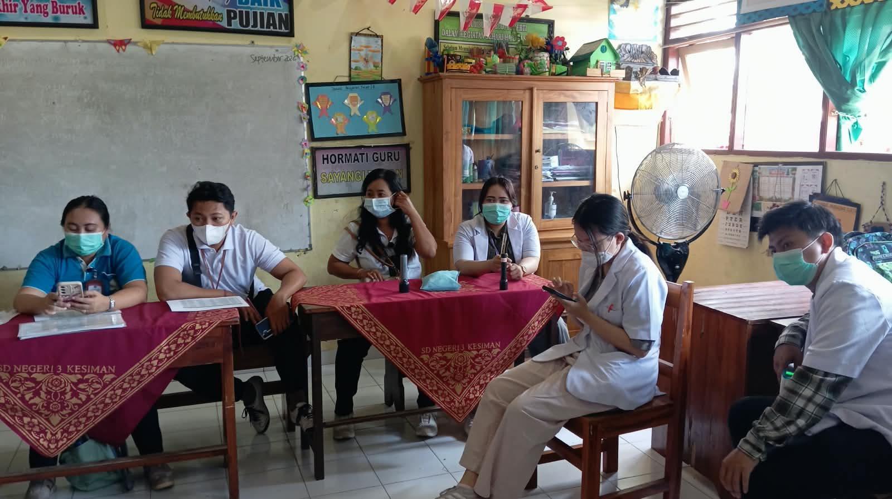
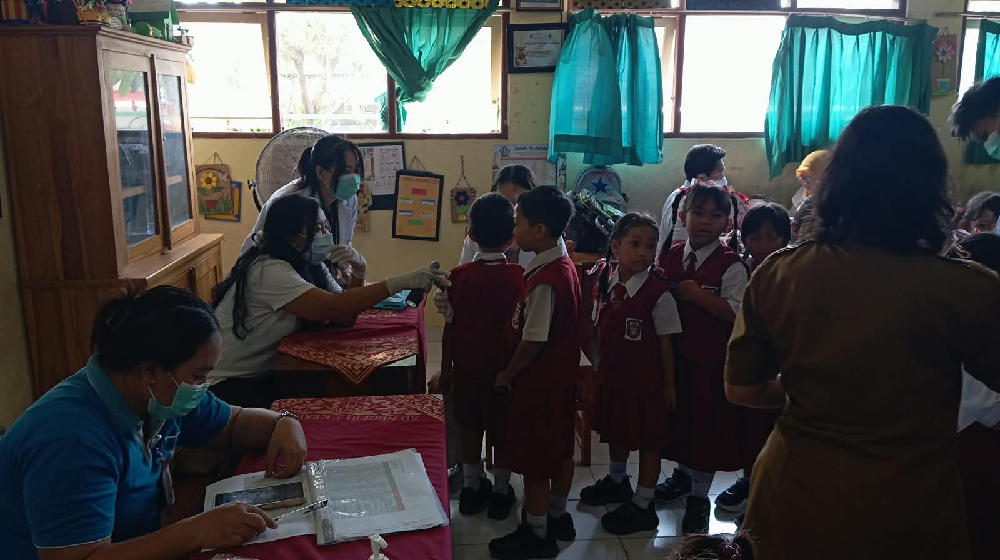
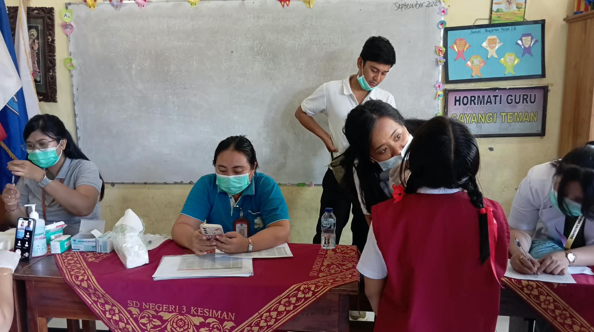
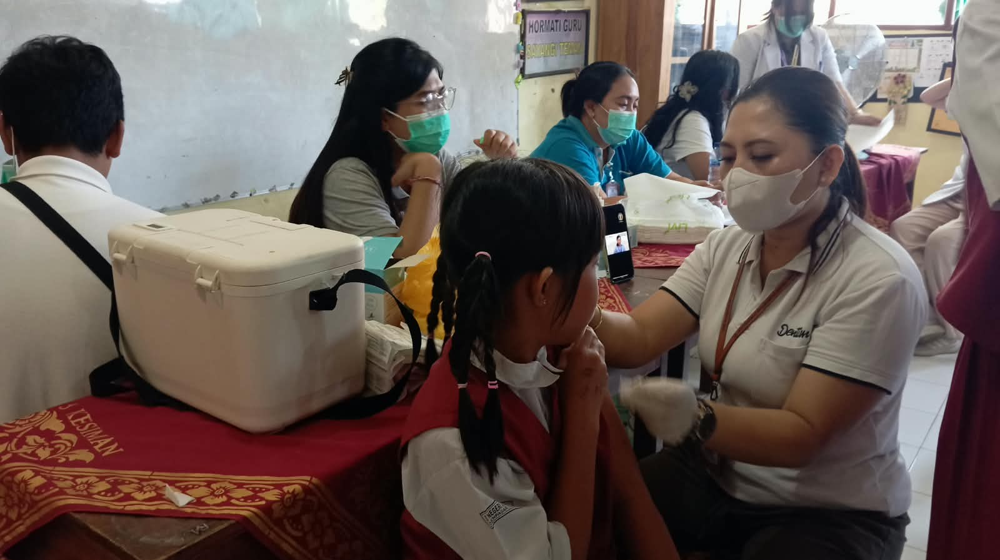

Kegiatan ini menyasar siswa kelas I dan kelas V. Siswa kelas I memperoleh imunisasi Measles Rubella (MR) sebagai upaya pencegahan penyakit campak dan rubela. Sementara itu, siswa kelas V memperoleh imunisasi Human Papillomavirus (HPV) sebagai langkah perlindungan dini terhadap penyakit yang disebabkan oleh virus HPV, termasuk kanker serviks.


Persiapan untuk Kenyamanan Siswa
Sebelum mengikuti imunisasi, para siswa dipastikan telah menyantap Makan Bergizi Gratis (MBG) yang disediakan di sekolah. Hal ini dilakukan agar siswa tidak mengikuti imunisasi dalam keadaan perut kosong serta tetap merasa nyaman selama kegiatan berlangsung.
Petugas kesehatan juga melakukan pemeriksaan awal untuk memastikan kondisi kesehatan setiap siswa. Pelaksanaan imunisasi didampingi oleh para guru sehingga siswa merasa lebih tenang, aman, dan nyaman.

Mendukung Tumbuh Kembang Anak Sehat
Kegiatan BIAS merupakan salah satu bentuk pelayanan kesehatan bagi peserta didik sekaligus bagian dari upaya sekolah dalam mendukung tumbuh kembang anak yang sehat. Melalui pemberian imunisasi secara rutin dan lengkap, diharapkan siswa memiliki perlindungan yang lebih baik terhadap berbagai penyakit yang dapat dicegah dengan imunisasi.

SD Negeri 3 Kesiman menyampaikan terima kasih kepada UPTD Puskesmas II Dinas Kesehatan Kecamatan Denpasar Timur, para guru, orang tua, serta seluruh pihak yang telah mendukung kelancaran kegiatan tersebut.
Melalui kerja sama antara sekolah, keluarga, dan tenaga kesehatan, SD Negeri 3 Kesiman terus berkomitmen menciptakan lingkungan pendidikan yang sehat, aman, dan mendukung perkembangan optimal seluruh peserta didik.
“Anak Sehat, Belajar Semangat, Masa Depan Hebat!”